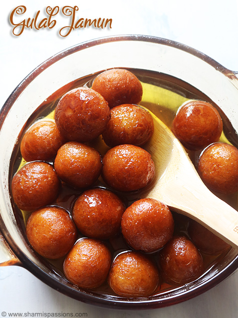
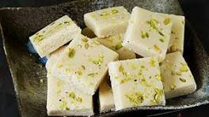

Gulab Jamun

Ingredients
- Mawa
- Maida
- Sugar
- Oil/Ghee
- Baking Powder
- Kesar
- Green cardamoms
- Water
Steps For Sugar Syrup:
- Take 1½ cups sugar, 3-4 green cardamoms (or 1/4 teaspoon cardamom powder) and 8-10 saffron strands in a deep pan.
- Add 2½ cups water and bring mixture to boil over high flame. When it comes to rolling boil, reduce flame to medium and cook until sugar syrup is little sticky, it will take around 10-12 minutes. Stir occasionally in between. Turn off the flame. Sugar syrup is ready. After deep frying jamuns in later step, heat the sugar syrup for 4-5 minutes.
Steps For Prepare Jamuns:
- Prepare 1 cup mawa by following the recipe given above or use readymade mawa. Crumble it using hand or grate it using a grater. Add 1/8 teaspoon baking soda and 1/2 cup sifted maida.
- Mix them gently using a spoon.
- As you can see, the flour is easily mixed with mawa because of moisture in mawa.
- Knead all of them together until smooth dough is prepared. If required add a few teaspoons of milk to knead a smooth and soft dough.
- Divide dough into 16-18 equal parts, grease hands with ghee and make smooth surfaced balls from it. Make sure that there is no crack on the surface of balls because it will make jamuns to crack open while deep frying. If you are not able to form crack-less balls, then you need to make dough bit softer. To do this, add milk in dough, knead it again and roll the balls again. Do not make very large balls because they will increase in size after deep frying and soaking in syrup.
- Heat ghee or oil (or 1/2 ghee and 1/2 oil) in a pan over medium flame. When ghee is medium hot, add a pinch of dough in hot ghee and if it comes upward immediately without changing it’s color, ghee is ready. If it turns brown immediately, ghee is too hot. If it doesn’t come upward, ghee is cold. Add prepared dough balls (4-6 at a time or depending on the size of a pan) and deep-fry them over low to medium flame. As you can see they will turn light golden and increase in size after a minute. If the jamuns turn dark brown immediately then the temperature of ghee is too hot, pour some cold ghee in to ghee to reduce the temperature.
- After 3-4 minutes, they will turn light golden brown.
- Deep fry them until they turn golden brown, it will take around 6-7 minutes. Cooking them evenly is the key to soft and textured gulab jamuns, increase or decrease flame intensity to keep the temperature of ghee even while frying them.
- Drain and transfer them over kitchen napkin and let them cool for 5-minutes. As you can see, the balls are increased in size after deep frying. Do not add them directly into warm sugar syrup.
- Add fried balls into warm sugar syrup (not hot syrup). If you add them into hot syrup, they will shrink in size.
- Soak them for at least 1-2 hours before serving. As you can see in the picture, the jammuns are increased to almost double in size. Gulab jamuns are ready for serving. Serve them warm or chilled.
Veg Manchurian
.jpeg)
Ingredients
- Cabbage
- Capsicum
- Spring Onion
- Garlic/Ginger
- Baking Powder
- Corn flour
- Oil
- All types of Sauce
To prepare the vegetable balls:
- Take all the veggies, finely chopped, in a bowl along with ginger, garlic, corn flour, maida, salt, black pepper and soy sauce.
- Mix them well, adding water as required for consistency.
- Make round balls out of the thick vegetable mixture.
- Now deep fry the vegetable balls in a pan.
Prepare the sauce:
- Heat some oil in a pan and roast ginger, garlic and green chilli in it for a while
- Add spring onion, tomato ketchup, chilly sauce, soya sauce and vinegar followed by salt and black pepper.
- Mix them well and add a mixture of corn flour plus water to the pan.
- Mix thoroughly and put the fried vegetable balls into the mixture.
- Properly mix the balls along with the sauce.
- Garnish with spring onion and celery. Serve hot along with cooked rice.
Samosa

Ingredients
- Potato
- flour
- Spring Onion
- Garlic/Ginger
- Peanuts
- Masala
- Oil
- Sauce
To prepare Samosa:
- Sauté cumin seeds for potato filling To make delicious samosas at home, first, make the filling. Put a pan on medium flame and add 2 tsp olive oil in it. Once the oil is hot enough, add cumin seeds and allow them to crackle.
- Add spices and boiled potatoes and cook for a while Now, add whole coriander seeds, ginger and green chilli. Saute for a minute and then add chopped cashews and raisins, peanuts if you like them, boiled and mashed potatoes, cumin powder, coriander powder, garam masala powder, red chilli powder, salt to taste, kasoori methi leaves, coriander leaves. Mix well and saute for 2 minutes. Your stuffing is ready!
- Prepare the dough for the Samosa Now, to prepare the dough, take a mixing bowl and combine all-purpose flour along with carom seeds and salt. Mix and then add ghee and start kneading by adding a little water at a time. Ensure that you add water gradually and make a firm dough. A soft dough will not make your samosas crispy. Cover the dough with a damp muslin cloth and keep aside for about half an hour.
- Roll the dough in small puris and cut into half Once done, roll out few small-sized balls from the dough. Flatten them further with the help of your palms and then with a rolling pin. Give them a round shape and cut in half. Now dip your hands in water, fold the edges of the semi-circle in order to give it a cone shape.
- Fill the semi-circle with potato filling and deep fry Take the filling with the help of a spoon and stuff it in the cone. Seal the ends properly by pressing the edges lightly with your fingers. Then, heat olive oil in a pan and deep fry the samosas on low heat until they turn golden brown and crispy. Serve with tomato ketchup and green chutney. Enjoy it as a tea-time snack!
Tips:
- To make samosas cripsy, make sure you knead a tight or stiff dough as the soft dough will not yield best results.
- Before kneading the dough, keep it in mind that you do not need to overwork it and mix the oil with flour at least 5-6 times. This will ensure you have crispy samosas.
- You should keep aside the dough for at least 40-60 minutes for best results.
- While rolling the dough ball, keep it thin and do not use any flour in it. You can use a little oil to roll the ball evenly.
- Always fry the samosas on low flame irrespective of how much time it is taking to fry. This will also ensure that your samosas are blisters free and cooked from inside.
Barfi

Ingredients
- Condensed Milk
- Milk Powder
- Ghee
- Water
- Green cardamom
- Silver Vark
- Almonds
To prepare Milk Barfi:
- Make the milk powder dough Take a large bowl and add milk powder to it along with milk. Make a rigid dough using these ingredients. Once done, keep the dough in the freezer and freeze it for at least for 20 minutes.
- Grate the dough & heat some ghee Take the dough and grate it in a bowl. Keep this grated dough aside for further usage. Take a deep bottomed pan, keep it on low flame and heat ghee in it.
- Cook the grated dough with cardamom Add the grated dough to this pan with water. Mix well and stir in cardamom powder in the pan. Cook this mixture until the water dries out and the mixture accumulates in the centre of the pan.
- Garnish with silver varq & almonds before serving Pour this prepared mixture into a greased tray and garnish it with almonds and pistachios. Let the mixture cool down and cut the barfi into desired shapes. Garnish it with silver varq and serve!
Tips:
- You can also use evaporated milk instead of condensed milk.
- You can skip the silver varq if you like.
- Do not overcook the barfi mixture as it will turn chewy.
- You can store the barfis in an airtight container.